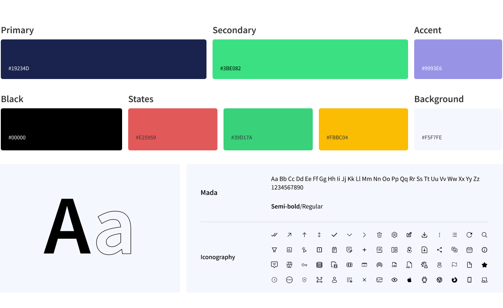
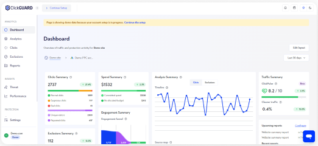
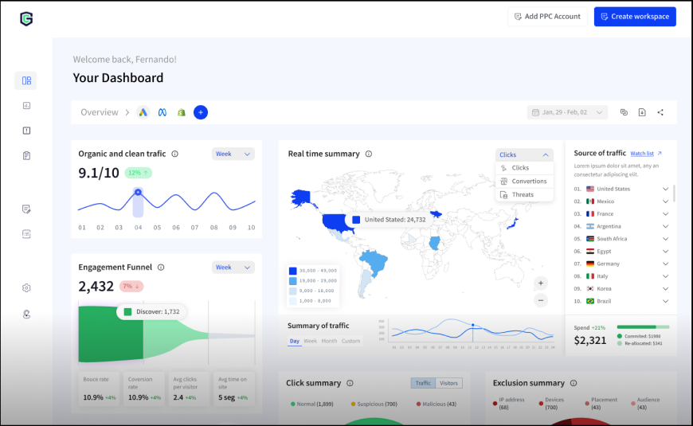
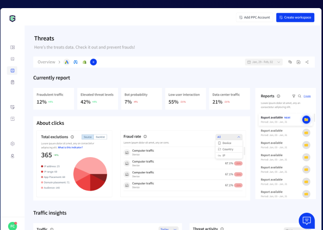
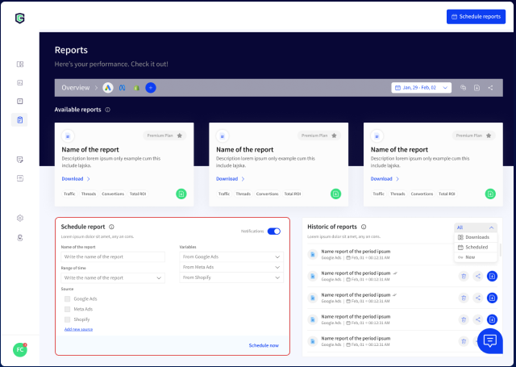
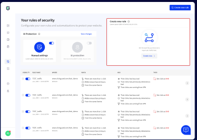
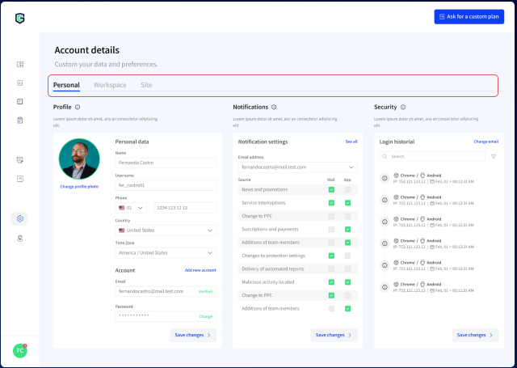

00 · Executive summary2-day sprint
A UX audit and redesign of the ClickGUARD dashboard, an analytics and cybersecurity platform that protects PPC campaigns from fraudulent clicks.
2days
To define the new visual structure
15+
Screens redesigned
3
Research methods: research, benchmark, audit
4
Personas across marketing, data, and security
Problem
Hard-to-read charts, a weak hierarchy, redundant sections, and wasted space made the dashboard hard to use.
Approach
A two-day design-thinking sprint: audit on day one, UI kit and hi-fi prototype on day two.
Outcome
A modern, space-efficient dashboard where the key metrics and cyber risks are visible from the start.
Process · two daysFig. A
Day 1Day 2
Empathize
Define
Ideate
Prototype
Test
DeliverablesUX audit reportFigma proposal & screensBasic design system
Step 01 / 05Day 1
01
Audit
GoalEvaluate and document the current dashboard: competitors, information organization, and usability.
What we did
- UX research: a visual analysis and testing of the platform.
- Benchmark of about 5 competitors: organization, navigation maps, and hierarchy.
- Audit of navigation, visual consistency, content clarity, and CTAs.
- Action plan with specific design and usability recommendations.
Findings by methodFig. B
UX research→Charts are hard to interpret; the hierarchy hides what matters.
Benchmark→Redundant sections; no design system, so the visuals feel uneven.
Audit→Wasted space; hard steps; key tools aren't easy to find.
Core action plan
A.01
Reorganize charts and data
So they are easier to interpret.
A.02
Clearer information
Fewer details, descriptive headlines.
A.03
Visual hierarchy
Dividers, type sizes, and color to highlight.
A.04
Remove redundancy
Merge sections to simplify navigation.
A.05
Visual consistency
A coherent design system across the dashboard.
A.06
Simpler processes
Clear, shorter steps.
Step 02 / 05Day 1
02
Define
GoalUnderstand who uses the dashboard and where the journey breaks.
EC
Emily Chen, 29Digital marketing manager
- Needs
- Better ROI and traffic quality; rules to stop fraud.
MJ
Michael Jhonson, 36Data analyst
- Needs
- Spot trends in PPC data and suspicious patterns.
MS
Maria Santos, 39InfoSec manager
- Needs
- See bots, IPs, devices, and locations in real time.
JD
James Doe, 42Compliance specialist
- Needs
- Automatic reports to manage legal risk.
User journey map
Stage
Login
Watch performance
Threats
Download reports
Settings
Emotion
Anxiety
Mid-confused
Concern
Expectation
Determination
Pain point
Authentication delays
Hard to find or read the campaign summary
Threat verification is hard to locate
Reports are hard to find; little customization
Complex upgrades; unclear pricing
Opportunity
Faster, simpler login
Clear charts and easy navigation
A visible threats section with guidance
Visible reports with custom data
Simple upgrade and clear plans
Step 03 / 05Day 1
03
Ideate
GoalTurn findings into user stories, a new information architecture, and wireframes.
MARKETING
Explore campaigns
Access key metrics like ROI, CTR, and conversions through specific charts.
SECURITY
Detect threats
Identify patterns of malicious traffic and insecure clicks.
REPORTS
Automate reports
Schedule reports with specific parameters and dates.
SETTINGS
Configure
Update profile, billing, workspace, and subscription.
Information architectureFig. C
Website→Sign up / login→Dashboard
DashboardSummaryReal-time dataHistorical performance
PerformanceAnalyticsClicksExclusions
ThreatsCurrent reportsTraffic insightsLocation data
ReportsScheduleHistoric reports
RulesAI protectionCreate rules: name, trigger, criteria, action
BlacklistAbout entities
SettingsPersonalWorkspaceSite
Brand#19234D · #3BE082 · #9993E6Mada
Step 04 / 05Day 2
04
Prototype
GoalA UI kit, components, and a hi-fi prototype with 15+ redesigned screens.
Design system
- Colors: navy primary, green secondary, violet accent, and state colors.
- Typography: Mada, semibold and regular.
- Components: sidebar, buttons, tags, avatars, and alerts.
- Charts designed as part of the system.

Step 05 / 05Day 2
05
Before & after
GoalShow how each finding changed the screens.
Before · Dashboard

After · Dashboard

DASHBOARD
Main metrics first
Key charts replaced; funnel and traffic sources prioritized; clearer menu icons.
PERFORMANCE
Three pages into one
Analytics, clicks, and exclusions merged into tabs; charts grouped; a repeated page removed.
THREATS
Cyber risks up front
Metrics reorganized so the main risks and threat reports are visible right away.
REPORTS
Find, filter, schedule
Search and filters, latest reports as cards, history, and scheduling by platform and date.
RULES
Rules in 4 steps
AI configuration first, a 4-step rule builder, and a readable table of rules.
SETTINGS
Tabs, not submenus
Profile, notifications, and logins on one page, navigated with tabs and pills.
06 · ResultsReady to implement
06
Clarity in two days
OutcomeA new visual structure, ready to test and implement within the next three months.
SPACE
Less wasted space
Denser, organized layouts that show more without clutter.
NAVIGATION
Fewer pages
Redundant sections merged into tabs and a clearer IA.
CONSISTENCY
One system
A basic design system with components and charts.
Evidence
Threats Reports Rules Settings




Next case · 08 / 21Incrediwear
→